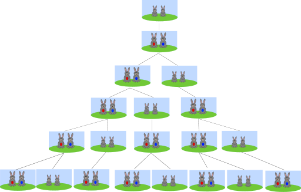

Matematyka?
Co łączy liczby
1, 1, 2, 3, 5, 8...
?
-
Są to
liczby Fibonacciego
Wiecie, skąd się biorą?
Zaczynamy od 1. 1 + poprzednia liczba(której niema) = 1. Więc 1 to następna liczba.
1 + poprzednia liczba(1) = 2. Więc 2 to następna liczba.
2 + poprzednia liczba(1) = 3. Więc 3 to następna liczba.
3 + poprzednia liczba(2) = 5. Więc 5 to następna liczba.
I tak dalej...🥱
Wychodzi nam rząd : 1, 1, 2, 3, 5, 8, 13, 21, 34, 55, 89, 144, 233, 377, 610, ...
Po co to trzeba?
Po pierwsze, za pomocątych liczb można stworzyć ładny wzorek :

Po drugie, cała przyroda zna liczby Fibonacciego.
Na przykład zające rozmnażają się w ten sposób. Zobaczcie :

Każda para zajęcy co miesiąc rodzi jedną parę potomków.
Pierwsza para rodzi drugą, druga rodzi następną, gdy pierwsza robi to samo.
I tak dalej.
A teraz pytanie : Ile zajęcy będzie po 15 dniach?
Podpowiedź : Zobacz wyżej do rzędu liczb.